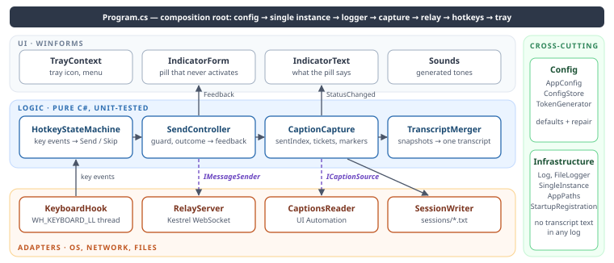
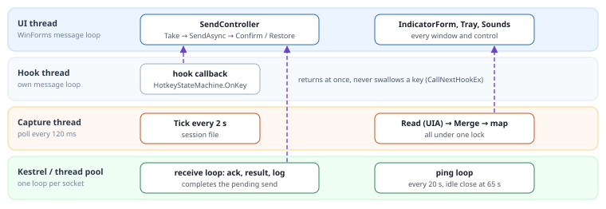

اپ ویندوزی حدود ۳۵۰۰ خط C# است و در هفت پوشه سازمان یافته. ایدهی اصلی ساده است: منطق خالص (که فقط داده میگیرد و تصمیم میگیرد) از آداپتورها (که با ویندوز، شبکه و فایل حرف میزنند) جداست، تا بشود منطق را بدون Live Captions، بدون کیبورد واقعی و بدون شبکه تست کرد.

| پوشه | مسئولیت |
|---|---|
Captions | خواندن Live Captions، ادغام snapshotها در یک رونوشت، sentIndex، فایل جلسه |
Input | هوک سطح پایین کیبورد و ماشین حالت کلید میانبر |
Sending | کنترلکنندهی ارسال و اینترفیس IMessageSender |
Relay | سرور WebSocket روی loopback (پیادهسازی IMessageSender) |
UI | آیکون tray، منو، نشانگر کوچک (pill)، صداها |
Config | خواندن و ترمیم config.json، ساخت توکن |
Infrastructure | لاگ چرخشی، جلوگیری از اجرای دو نسخه (mutex)، مسیرها، شروع با ویندوز |
HotkeyStateMachine هیچ API ویندوزی صدا نمیزند؛ فقط «این کلید، بالا یا پایین،
و وضعیت بقیهی کلیدها» را میگیرد. KeyboardHook فقط رویدادها را از ویندوز میگیرد و به آن میدهد. همین الگو
در TranscriptMerger در برابر CaptionsReader تکرار شده.ICaptionSource و IMessageSender اجازه میدهند در تست یک منبع متن یا یک
فرستندهی جعلی جایگزین شود. ساعت هم تزریق میشود (Func<DateTime>) تا تستهای زمانی بدون صبر کردن اجرا شوند.Program.cs خواناتر است: ترتیب ساخته شدن همهچیز
در یک صفحه دیده میشود.
هر نخ صاحب یک کار است. هر چیزی که به رابط کاربری دست میزند، با BeginInvoke به نخ UI منتقل میشود؛ و
وضعیت مشترک رونوشت فقط زیر یک قفل در CaptionCapture تغییر میکند.

BeginInvoke.اگر callback هوک سطح پایین دیر برگردد، ویندوز آن را نادیده میگیرد و ممکن است هوک را بیصدا حذف کند. با یک نخ و message loop اختصاصی، شلوغ بودن نخ UI هرگز کیبورد کل سیستم را کند نمیکند.
کلاس SendController همهی کارش را روی نخ UI انجام میدهد و بعد از await هم همانجا برمیگردد. پس
دیکشنری ارسالهای در صف و پیامهای نشانگر بدون قفل امناند.
ده دقیقه گفتار پیوسته با Live Captions: اپ فقط ۳ ثانیه CPU و ۷۲ MB حافظه مصرف کرد — poll کردن هر ۱۲۰ میلیثانیه ارزان است چون فقط یک property خوانده میشود.
I separated pure logic from adapters. The state machine, the transcript merger, capture and the send controller are plain C# classes that take data and return decisions, so they are unit-tested without Windows, a keyboard or a network. The adapters — the keyboard hook, the UI Automation reader, the Kestrel server and the session writer — are thin. Interfaces like ICaptionSource and IMessageSender, plus an injected clock, are the seams. Each thread owns one job, shared transcript state lives behind one lock, and everything UI is marshalled to the UI thread.